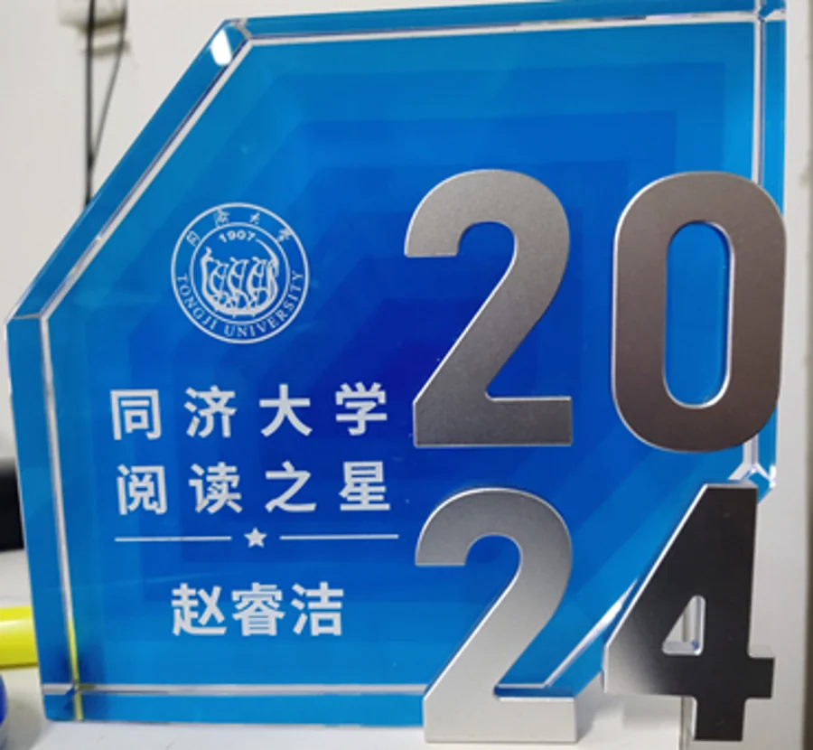

Campus & culture
Reading, calligraphy, volunteering, and university life.

Reading, calligraphy & writing
I received Tongji University’s Reading Star award twice. My writing from a university reading competition was indexed by CNKI and included in a volume published by Zhonghua Book Company. My Zhihu posts have received over one million views.
I was interviewed by Shanghai Education TV and featured by People’s Daily, China Youth Daily, and Tongji University. I write to children in rural areas and donate books and school supplies.
Campus activities
Tongji Jixing Society · Communications
Write articles and event copy for the society.
Tongji Innovation and Entrepreneurship Department · General administration
Help with member training, meetings, and coordination across departments.
Tongji Dianmoxuan · Communications
Organize events, write copy, and promote calligraphy.
Tongji Women’s College · Editorial team
Helped organize and document events and wrote for university social media.
Led a campus innovation project on an intelligent delivery robot and an award-winning winter service project in 2026. Also took part in winter fieldwork in 2025 and the Beautiful Holidays program in 2026. See volunteering and service documentation
Education & skills
Tongji University · Undergraduate
Mechanical Design, Manufacturing and Automation, Sep 2024–Jun 2028 (expected). Undergraduate advisors: Wanghui Bu and Qijun Chen.
Coursework includes mechanisms, mechanical design, control engineering, electric drives, vibrations, engineering mechanics, mechanics of materials, electrical engineering, and metrology.
Tools & skills
Python / C++ · ROS 2 · SLAM · Arduino IDE · SolidWorks · CAD · MATLAB · Fluent · C4D